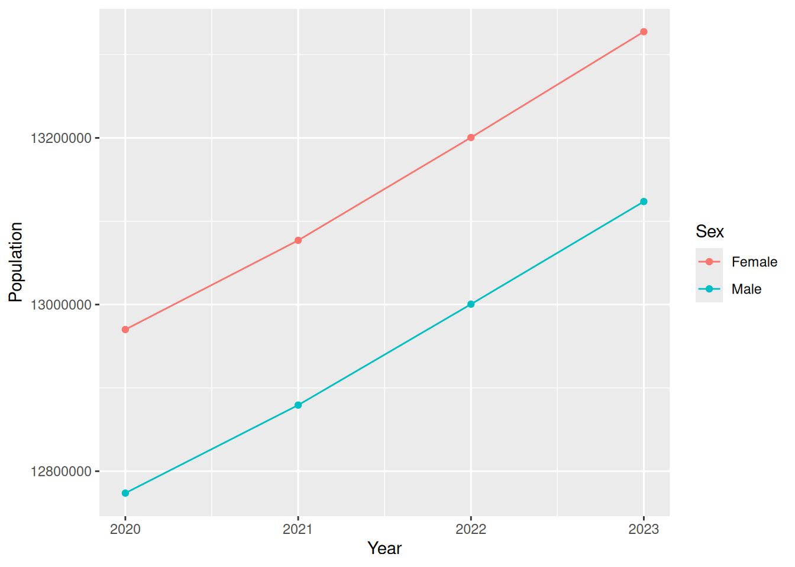

popular
This vignette shows how to:
- Set up your API key
- Query data from the WPP API
- Filter and summarise population indicators.
Setting up your API key
To query the WPP API, you require an API key. You can get this by emailing population at un dot org (replace the words with the symbols) with the subject “Data Portal Token Request”.
It might take a few days for the team to get back to you with your API key.
Once you have your key, you can set your API key using:
-
popular::set_wpp_api_key(YOUR_KEY_HERE): This will set your key for the session - Via the
.Renvironfile. The easiest way to access this is withusethis::edit_r_environ().
The .Renviron file is a key-value pair, so just add a line that says
WPP_API_KEY=YOUR_KEY_HERE
Don’t include any spaces before or after the = sign.
Restart your R session. You can test if the key is working by typing get_wpp_api_key(). If this function doesn’t return an error, then you are good to go.
Querying data from the WPP API
The WPP API operates based on indicators and locations. These are typically numeric identifiers. Indicators can be thought of as datasets. There is a wide range of datasets reported by the API, and you can see the list using
get_base_levels("Indicators")
#> # A tibble: 64 × 33
#> id name shortName description displayName dimAge dimSex dimVariant
#> <int> <chr> <chr> <chr> <chr> <lgl> <lgl> <lgl>
#> 1 1 Contracepti… CPAnyP Percentage… Any FALSE FALSE TRUE
#> 2 2 Contracepti… CPModP Percentage… CP Modern FALSE FALSE TRUE
#> 3 3 Contracepti… CPTrad Percentage… CP Traditi… FALSE FALSE TRUE
#> 4 4 Unmet need … UNMP Percentage… Unmet need FALSE FALSE TRUE
#> 5 5 Unmet need … UNMModP Percentage… Unmet need… FALSE FALSE TRUE
#> 6 6 Total deman… DEMTot Percentage… Total dema… FALSE FALSE TRUE
#> 7 7 Demand for … DEMAny Percentage… Demand sat… FALSE FALSE TRUE
#> 8 8 Demand for … DEMMod Percentage… Demand sat… FALSE FALSE TRUE
#> 9 9 Contracepti… CPAnyN Number of … Contracept… FALSE FALSE TRUE
#> 10 10 Contracepti… CPModN Number of … Users of m… FALSE FALSE TRUE
#> # ℹ 54 more rows
#> # ℹ 25 more variables: dimCategory <lgl>, defaultAgeId <int>,
#> # defaultSexId <int>, defaultVariantId <int>, defaultCategoryId <int>,
#> # variableType <chr>, valueType <chr>, unitScaling <dbl>, precision <int>,
#> # isThousandSeparatorSpace <lgl>, formatString <chr>, unitShortLabel <chr>,
#> # unitLongLabel <chr>, nClassesDefault <int>, downloadFileName <chr>,
#> # sourceId <int>, sourceName <chr>, sourceYear <int>, …If you are working on age-related data, then you probably want this indicator:
age_sex_id <- get_id("Population by 5-year age groups and sex", type = "Indicators", search = FALSE, .progress = FALSE)
age_sex_id
#> # A tibble: 1 × 4
#> id name shortName description
#> <int> <chr> <chr> <chr>
#> 1 46 Population by 5-year age groups and sex PopByAge5AndSex Annual populati…By default, the get_id function will perform a fuzzy search for the string you pass in, so if you’re not sure of the indicator, have a guess and see what comes back.
The other piece of information you require is a location. This could be a country, or wider region. For example,
australia <- get_id("Australia", type = "locations")
australia
#> # A tibble: 5 × 6
#> id name iso3 iso2 longitude latitude
#> <int> <chr> <chr> <chr> <dbl> <dbl>
#> 1 36 Australia AUS AU 134. -25.3
#> 2 927 Australia/New Zealand ANZ ZL NA NA
#> 3 1834 Australia/New Zealand ANZ ZL NA NA
#> 4 1835 Oceania (excluding Australia and New Zea… OCA OZ NA NA
#> 5 5502 Europe, Northern America, Australia, and… SDG SD NA NAIf I know the country I want exactly, I can disable search using
australia <- get_id("Australia", type = "locations", search = FALSE)
australia
#> # A tibble: 1 × 6
#> id name iso3 iso2 longitude latitude
#> <int> <chr> <chr> <chr> <dbl> <dbl>
#> 1 36 Australia AUS AU 134. -25.3Finally, I can collect the indicator data from the API using get_indicator_data:
aus_data <- get_indicator_data(indicator_id = age_sex_id$id, location_id = australia$id, start_year = 2020, end_year = 2024)
aus_data#> # A tibble: 252 × 7
#> locationId location year sexId ageStart ageEnd population
#> <dbl> <chr> <dbl> <fct> <dbl> <dbl> <dbl>
#> 1 36 Australia 2020 Male 0 4 793764
#> 2 36 Australia 2020 Female 0 4 749506
#> 3 36 Australia 2020 Both sexes 0 4 1543270
#> 4 36 Australia 2020 Male 5 9 836376.
#> 5 36 Australia 2020 Female 5 9 791073
#> 6 36 Australia 2020 Both sexes 5 9 1627450.
#> 7 36 Australia 2020 Male 10 14 826988
#> 8 36 Australia 2020 Female 10 14 780265
#> 9 36 Australia 2020 Both sexes 10 14 1607253
#> 10 36 Australia 2020 Male 15 19 770618.
#> # ℹ 242 more rowsWorking with data from the WPP API
Let’s start by creating a simple time series plot of the population, stratified by sex, over time.
First, notice that the WPP API returns three levels for sexId:
We will need to filter out the sum.
aus_data |>
filter(sexId != "Both sexes") |>
group_by(year, sexId) |>
summarise(population = sum(population)) |>
ggplot(aes(x = year, y = population, colour = sexId)) +
geom_line() +
geom_point() +
labs(x = "Year", y = "Population", colour = "Sex")
#> `summarise()` has grouped output by 'year'. You can override using the
#> `.groups` argument.
We can see that there is consistently a higher proportion of females than males in Australia!